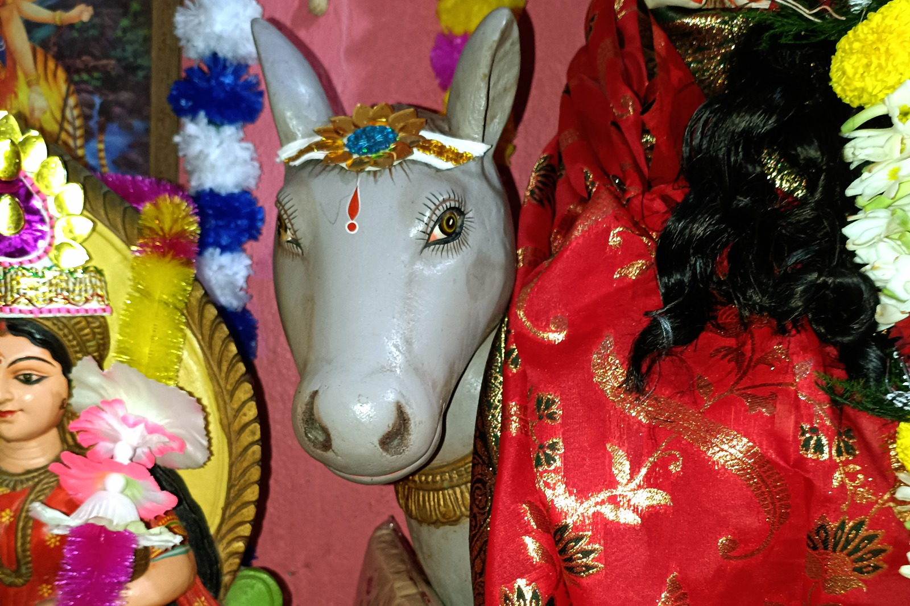
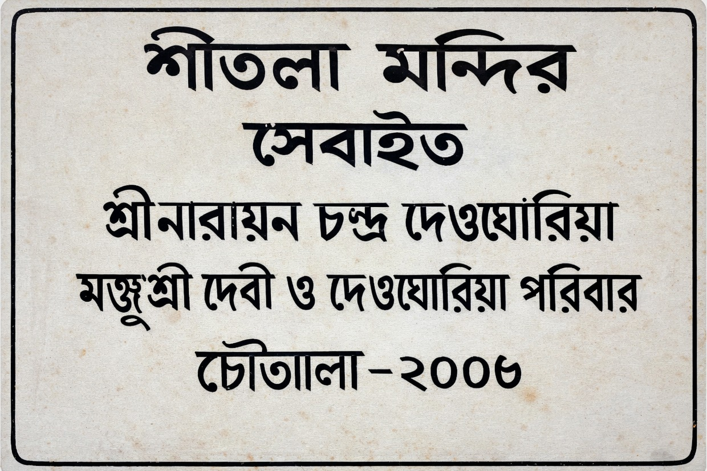

श्री गणेश
शुभ कार्यों के आरंभ के देवता।
सर्वप्रथम इनकी पूजा की जाती है।
शुभ कार्यों के आरंभ के देवता।
सर्वप्रथम इनकी पूजा की जाती है।

धन और समृद्धि की देवी।
सुख और सौभाग्य प्रदान करती हैं।

शक्ति और सुरक्षा की प्रतीक।
बुरी शक्तियों का विनाश करती हैं।

युद्ध और वीरता के देवता।
युवावस्था और साहस के प्रतीक।

दुष्ट शक्तियों का विनाश करने वाली।
शक्ति का स्वरूप और शांति की प्रतीक।

ज्ञान और कला की देवी।
विद्या और बुद्धि का आशीर्वाद प्रदान करती हैं।

माँ शीतला को सामान्यतः गधे पर सवार रूप में दर्शाया जाता है। उनके एक हाथ में झाड़ू और दूसरे हाथ में सूप या जल से भरा कलश होता है। झाड़ू से वे रोग-व्याधियों को दूर करती हैं और कलश के शीतल जल से लोगों के दुख-दर्द को शांत करती हैं।
कई पुराणों में वर्णन मिलता है कि वे स्कंद पुराण में वर्णित शक्ति का एक दिव्य स्वरूप हैं।
ऐसा कहा जाता है कि एक समय पृथ्वी पर भयंकर महामारी फैल गई थी। लोग असहाय होकर देवताओं से प्रार्थना करने लगे। तब देवताओं ने भगवान शिव से सहायता माँगी। शिव की कृपा से एक देवी प्रकट हुईं, जो लोगों के शरीर और मन को शांति देकर रोग-व्याधियों को दूर कर सकती थीं। वे ही माँ शीतला हैं।
एक अन्य मान्यता के अनुसार, वे देवी पार्वती का ही एक विशेष स्वरूप हैं, जो लोगों के कष्टों को दूर करने के लिए अवतरित हुईं।
बंगाल में सामान्यतः चैत्र महीने में शीतला पूजा मनाई जाती है। शीतला पूजा के दिन भक्तगण देवी को प्रसाद अर्पित करते हैं। "शीतला" शब्द का अर्थ ही शीतल या शांतिदायक होता है, जो शांति और आरोग्य का प्रतीक है।
पुराणों के अनुसार, माँ शीतला के प्रति भक्ति और श्रद्धा रखने से वे लोगों को रोग-व्याधियों और महामारियों से रक्षा प्रदान करती हैं।
माँ शीतला का एक प्रचलित मंत्र:
“ॐ शीतलायै नमः।”
एक अन्य भक्तिपूर्ण मंत्र का जाप किया जाता है:
“ॐ ह्रीं श्रीं शीतलायै नमः।”
ऐसा माना जाता है कि भक्तिभाव और शांत मन से जाप करने पर माँ शीतला की कृपा प्राप्त होती है।
माँ शीतला की कथा हमें सिखाती है कि स्वास्थ्य ही सबसे बड़ा धन है। स्वच्छता, विश्वास और मानवता के माध्यम से ही रोग-व्याधियों से मुक्ति संभव है। मन में भक्ति और विनम्रता हो तो देवी की कृपा सदैव मनुष्यों पर बनी रहती है।



यदि आपको कोई समस्या या प्रश्न है,
कृपया हमें बताएं।
हम आपकी यथासंभव सहायता करेंगे।
ई-मेल: shitla.mandir.varied646@passfwd.com
अपनी प्रतिक्रिया देंआज की बंगाली तिथि और पंचांग देखें


चौटाला शीतला मंदिर में आपका हार्दिक स्वागत है! हमारी पारिवारिक देखरेख में यह वेबसाइट मंदिर के इतिहास, पूजा एवं आयोजनों के बारे में भक्तों को जानकारी देने के लिए बनाई गई है।
आइए, भक्ति और शांति के इस पवित्र स्थल का अनुभव करें।